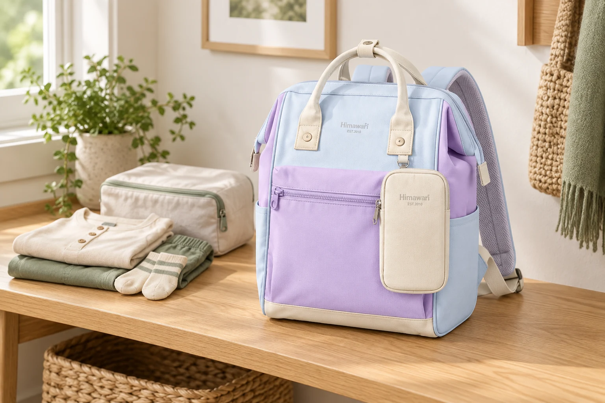

아이 여벌 옷은 갈아입을 한 묶음으로

아이와 외출하다 옷을 갈아입혀야 할 때 상의와 양말을 서로 다른 곳에서 찾으면 준비한 물건을 꺼내는 동작이 늘어납니다. 옷 종류별로 정돈하기보다 한 번에 갈아입을 구성을 묶어두는 방법을 생각해볼 수 있습니다. 어떤 옷이 필요한지는 일정과 아이가 평소 사용하는 기준에 맞춰 정합니다. 준비한 수보다 필요한 순간에 그 묶음을 찾을 수 있는지도 함께 봅니다.
출발 전에 오늘의 활동과 외출 시간을 확인합니다. 장시간 머무는 날과 잠깐의 외출에 같은 구성을 자동으로 넣지 않습니다. 사용할 옷의 크기와 계절에 맞는지 실제로 펼쳐봅니다. 오래 넣어둔 여벌은 지난번에도 썼다는 기억만으로 준비 완료라고 생각하지 않습니다. 지금 필요한 구성이 무엇인지 먼저 확인합니다.
한 번에 꺼낼 옷과 표시
상의와 하의, 필요한 속옷이나 양말을 함께 모을 수 있습니다. 모든 아이에게 같은 항목과 수량을 정하는 목록은 아닙니다. 실제로 갈아입힐 때 어떤 순서로 쓸지 생각하고 하나의 주머니를 열어 꺼내보세요. 주머니에서 작은 옷이 따로 흩어지면 접는 순서나 내부 묶음을 조정할 수 있습니다.
형제자매의 옷을 준비할 때는 묶음 자체를 나눕니다. 비슷한 옷을 한 주머니에 넣고 위아래 위치만 달리하면 꺼내며 다시 섞일 수 있습니다. 보호자가 구분할 색이나 짧은 표시를 정해봅니다. 개인정보를 밖에 크게 드러내기보다 사용자가 알아볼 방법을 고릅니다. 같은 주머니를 쓸 경우에는 어느 묶음이 누구의 것인지 실제로 펼쳐 대조합니다.
여벌을 여러 번 사용할 계획이면 첫 묶음과 다음 묶음을 구분할 수 있습니다. 어느 주머니가 비었는지 알아보면 사용 후 채워둘 항목도 보입니다. 옷의 종류마다 여기저기 넣는 방식보다 갈아입기 단위로 생각하면 준비의 역할이 분명해질 수 있습니다. 다만 주머니를 늘리는 것이 목적은 아니므로 필요한 묶음부터 정하고 보관품을 고릅니다.
외출 가방의 자료로 Himawari No.1027 제품 정보를 함께 소개합니다. 오늘의 옷 묶음을 준비한 다음 실제로 넣고 꺼내보며 위치를 정하세요. 사용하는 주머니를 하나 꺼낼 때 다른 짐을 모두 빼야 한다면 배치를 바꿀 수 있습니다. 새 가방이 필요한지 판단하기 전에 현재 구성에서 갈아입을 묶음을 한 번에 찾을 수 있는지 살펴봅니다.

사용한 옷이 돌아올 곳
깨끗한 여벌을 꺼낸 주머니에 사용한 옷을 바로 담을지 생각합니다. 다른 물건과 분리해 임시로 운반할 빈 주머니를 준비하는 방법도 있습니다. 물기가 있거나 오염이 보이면 현재 상태에 맞춰 다른 소지품과 닿는 위치를 구분합니다. 빈 주머니를 썼다는 이유로 어떤 상태도 그대로 보관할 수 있다고 생각하지 않습니다.
사용한 옷을 임시로 담았다면 귀가 후 먼저 꺼낼 묶음으로 둡니다. 집에서 해야 할 정리는 각 옷과 보관품의 안내를 따릅니다. 전자기기나 중요한 종이와 함께 둘 위치인지도 살펴보세요. 외출 전에 깨끗한 상태로 준비했던 옷과 사용 후의 옷은 같은 역할이 아니므로 가방에서 돌아갈 자리를 나누어 정합니다.
필요한 순간에는 잠시 머물 수 있는 장소와 준비물을 둘 위치를 확인합니다. 가방 전체를 열어 바닥에 모두 놓지 않아도 되는 배치면 동작을 나누기 쉽습니다. 옷을 꺼낸 뒤 빈 주머니와 사용한 옷의 주머니를 어디에 두었는지도 알아둡니다. 물건을 다시 담을 때 어느 쪽을 쓰는지 혼동하지 않도록 처음의 표시를 유지합니다.
다른 보호자도 같은 위치를 알도록
출발 전에 실제로 가방을 들 사람과 위치를 공유합니다. '큰 칸 위쪽의 파란 주머니가 여벌, 접힌 빈 주머니는 사용한 옷용'처럼 역할과 자리를 함께 말할 수 있습니다. 이는 가상 배치 예입니다. 주머니 이름만 알려주고 위치를 생략하면 익숙하지 않은 사람은 여러 칸을 열어봐야 합니다. 직접 꺼내보는 방식으로 확인할 수도 있습니다.
외출 중 가방을 다른 보호자에게 넘겼다면 바뀐 상태도 알립니다. 첫 여벌을 이미 썼는지, 사용한 옷이 어디에 들어 있는지 함께 전하세요. 집에서 준비한 구성만 설명하면 현재 비어 있는 주머니를 아직 준비된 것으로 생각할 수 있습니다. 사용한 묶음과 남은 여벌이 같은 정보로 전달되지 않게 짧게 정리합니다.
유모차를 함께 사용하는 경우에는 짐을 어디에 둘지 해당 제조사의 안내를 확인합니다. 임의로 손잡이에 가방을 걸기보다 안내된 위치와 허용 조건에 맞춰 운반합니다. 이동 중 가방을 꺼낼 사람과 돌아갈 자리를 정하면 다른 짐을 함께 다루는 동작을 나눌 수 있습니다. 한 가지 위치를 모든 유모차에 적용하지 않습니다.
집에 돌아오면 임시로 담은 옷부터 꺼내고 남은 여벌도 살펴봅니다. 사용하지 않았다는 이유만으로 상태를 보지 않고 다음 외출에 옮기지 않습니다. 필요한 정리를 마친 뒤 세탁 중이거나 아직 채우지 못한 항목은 메모로 남겨둘 수 있습니다. 주머니가 그대로 있다는 사실과 옷이 준비되어 있다는 사실을 구분하는 기록입니다.
다음 외출 전에는 실제 묶음을 펼쳐 빠진 것을 채웁니다. 아이가 쓰는 크기와 일정이 달라졌다면 내용도 다시 정합니다. 누가 가방을 들지 확인하고 위치와 역할을 함께 전하세요. 옷을 한 번에 꺼낼 묶음, 사용한 옷이 돌아올 주머니, 아직 채울 항목이 각각 보이면 필요한 순간의 준비를 이어갈 수 있습니다.